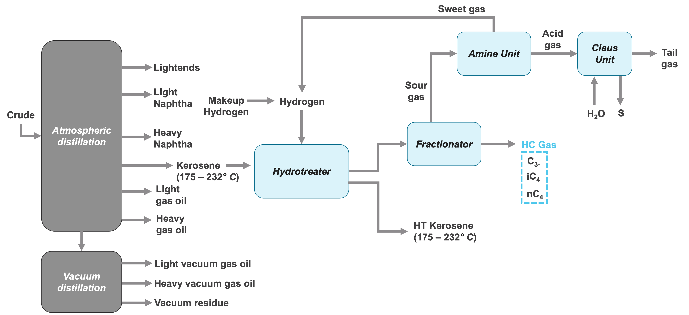
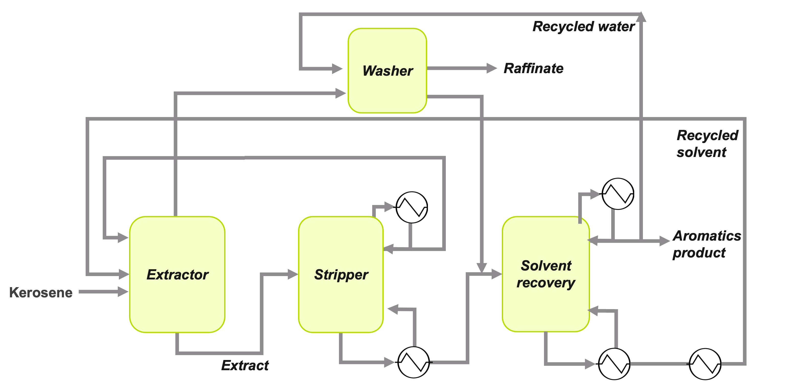

Cost Benefit Analysis of Low Aromatic Fuels
Aromatics research details: Aromatics have higher binding energy between atoms compared to aliphatic compounds. Jet fuel with higher aromatics content has higher soot emissions.
Soot emissions have a variety of impacts:
- Air quality related health impacts
- Climate impacts due to direct & indirect radiative forcing via contrails
Reduce aromatics content via refining → Reduce soot emissions → Reduce jet fuel’s environmental impact?
Cost benefit analysis needed to evaluate advantages and trade-offs of opportunity.
Aromatics removal techniques
1. Hydrotreatment
Diagram for hydrotreatment of kerosene-based fuels to remove aromatics.

2. Solvent Extraction
Diagram for solvent extraction of aromatics from kerosene to reduce aromatics content.


About
Background
I'm Tara Housen, a Doctoral candidate in Aeronautics and Astronautics at MIT working in the Lab for Aviation and the Environment. I conduct research on techno-economic analysis and the development of learning curves for sustainable aviation fuels.
Education
Massachusetts Institute of Technology
Cambridge, Massachusetts
- Doctor of Philosophy in Aeronautics and Astronautics — May 2024 - Present
- Master of Science in Aeronautics and Astronautics — Sept 2022 - May 2024
Concentration in Aerospace, Energy, and the Environment
Villanova University
Villanova, Pennsylvania
Sept 2018 - May 2022
- Bachelor of Science in Mechanical Engineering with Concentration in Thermal Fluids
- Aerospace Engineering Minor
- Business Minor
Resume
Download resume: resume.md
Contact
Email: thousen@mit.edu
Phone: 732-456-2041
Location: 412 Laurel Ave, Brielle, NJ 08730